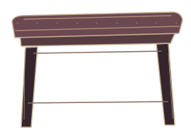
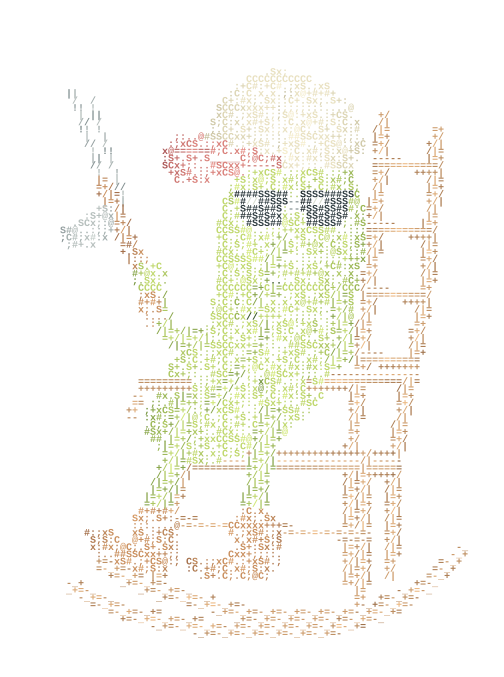

Cameron,
Opening the garden…
in the silliest moments,
in the smallest things,
 take a little look
take a little look
and in the sweetest sounds,

my thoughts always find their way to you.
Opening the heart…
okay bye
here, chocolate milk.
